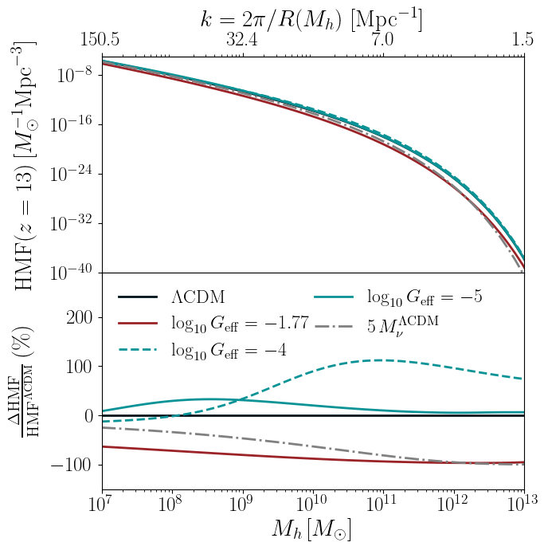
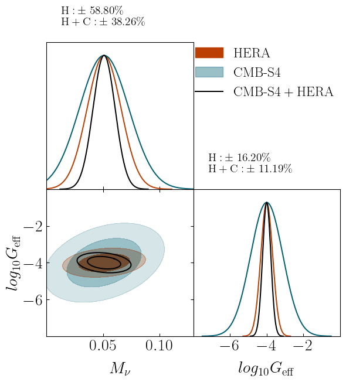

I have always been fascinated by interdisciplinarity and by the possibility of exploring the same topic from multiple perspectives, keeping an open mind and integrating diverse points of view.
This mindset has shaped both my methodology and my way of doing research: to understand deeply how things work, I believe it is crucial to think outside the box, combining tools and expertise from different fields.
What can we learn from the timeline of cosmic evolution?
When did the EoR begin, and what drives its evolution? What ionized the Universe?
What is dark matter made of, and how did it shape structure formation? How can we probe physics beyond the standard cosmological model?
Tackling the Epoch of Reionization
Maps by oLIMpus. On the top, LSS overdensities correlate with high star formation and strong line emission. The neutral hydrogen fraction shows anticorrelation, due to ionized bubbles. On the bottom, at high $z$ the cold IGM produces 21-cm absorption, hence in overdense regions it anticorrelates with OIII. As galaxies form and heat the gas, we see a positive correlation, until ionized bubbles turn it back to negative.
How did the Universe come to be the way it is? How did it evolve from a state filled with neutral hydrogen after recombination to the richly structured cosmos we observe today, with galaxies scattered across vast distances and an intergalactic medium (IGM) that is mostly ionized?
I am particularly fascinated by what I like to call the "teenager Universe": the Cosmic Dawn (z < 30) and the Epoch of Reionization (EoR, z ≈ 5-15). During this time, the radiation from the first galaxies altered the properties of the IGM, driving its phase transition.
To study these epochs, we can rely on two types of signals: the 21-cm line emitted by neutral hydrogen in the IGM, and emission lines produced during star formation (e.g., CII, OIII, CO). The most powerful technique to observe them is line intensity mapping (LIM).
To model these signals consistently, I recently released oLIMpus: a fully analytical effective model to study LIM auto- and cross-power spectra. The code is fast and scalable, capable of generating 21-cm and line-intensity maps in seconds and
can be found in my GitHub page. Its flexible architecture allows extensions to lower redshifts, beyond-ΛCDM cosmologies, and more complex astrophysical models informed by hydrodynamical simulations or observations. Its low computational cost makes it particularly suitable for exploring wide parameter spaces and performing MCMC analyses.
Cross-correlation studies open new paths to investigate the EoR. One first application is the study of a new boundary condition on its onset, based on the Pearson coefficient between maps. This approach provides a robust, model-independent signature of the earliest stages, when the very first ionized bubbles began to form.
Line Intensity Mapping


On the left: relative difference in the matter power spectrum between ΛCDM (black) and models with self-interacting neutrinos, parameterized by the coupling Geff (from strong, red, to weak, teal; log10(Geff)=-5 is beyond the reach of CMB experiments). The red dot-dashed curve fixes all cosmological parameters to &\Lambda;CDM, while the solid one uses the CMB best fit; the gray line shows the effect of massive standard neutrinos. On the center: halo mass function. Scale-dependent changes in P(k) alter the abundance of halos in different mass ranges. Moderate and weak Geff values impact the halos in the mass range typical during the EoR. These halos host the first galaxies, implying strong sensitivity of the 21-cm signal to these models.
On the right: forecast constraints for HERA (observing 21-cm), CMB Stage 4 and their cross correlation on moderate self-interacting neutrinos. All parameters but the sum of neutrino masses are marginalized over.
Line Intensity Mapping (LIM) surveys collect all incoming photons within a specific frequency band; rather than identifying resolved sources, their observables rely on the statistical analysis of intensity fluctuations across the observed map.
As a result, LIM offers unique advantages: it probes very high redshifts, captures the cumulative emission from faint and otherwise undetectable populations,
indirectly traces matter distribution on small scales (≈ 10 Mpc),
and remains sensitive to a broad range of physical processes, from the intergalactic and interstellar medium in its various phases, to
exotic emission sources such as decaying dark matter.
LIM surveys targeting star-forming lines can be used to probe large-scale structure, testing the underlying models of structure formation. LIM surveys are also sensitive to beyond-ΛCDM scenarios, which can be tested using different summary statistics on LIM maps,
for example, the voxel intensity distribution to detect signatures of primordial magnetic fields,
or by cross-correlating LIM maps with other observables,
such as the CMB to test the sum of neutrino masses.
At the same time, the 21-cm signal from the IGM is sensitive to cosmological components; for example,
self-interacting neutrinos, for which LIM can constrain models with weaker coupling strengths than current CMB experiments.
The 21-cm signal is also sensitive to models of enhanched high-z star formation, recently motivated by JWST observations.
Gravitational Waves as tracers of the Large Scale Structures